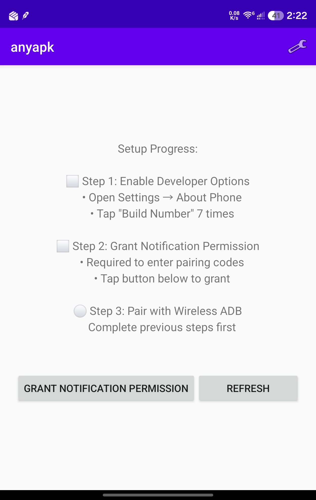
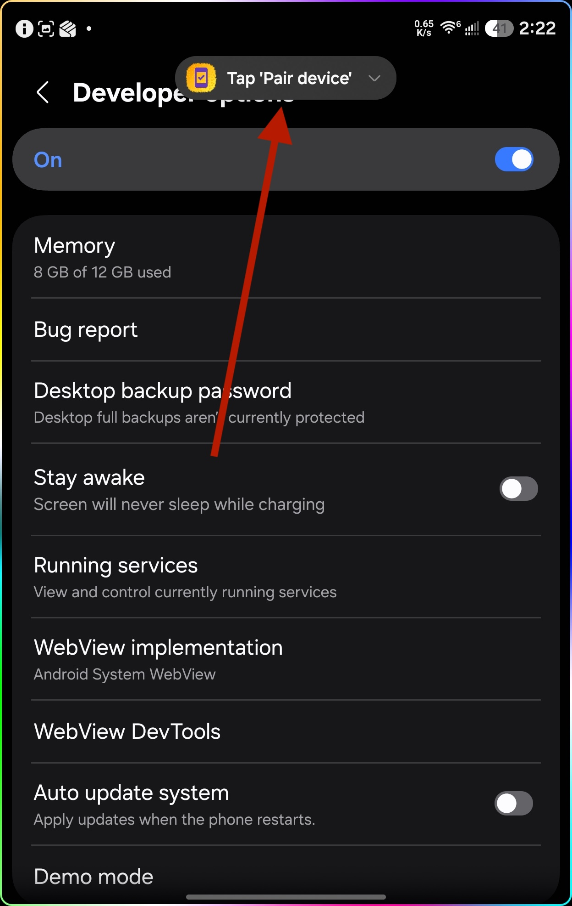
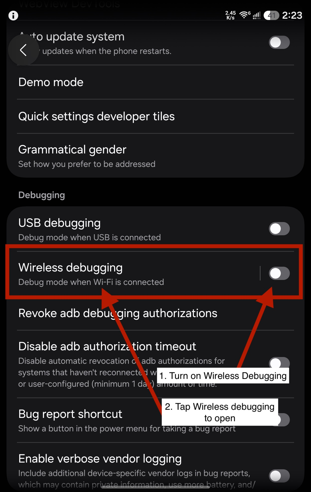
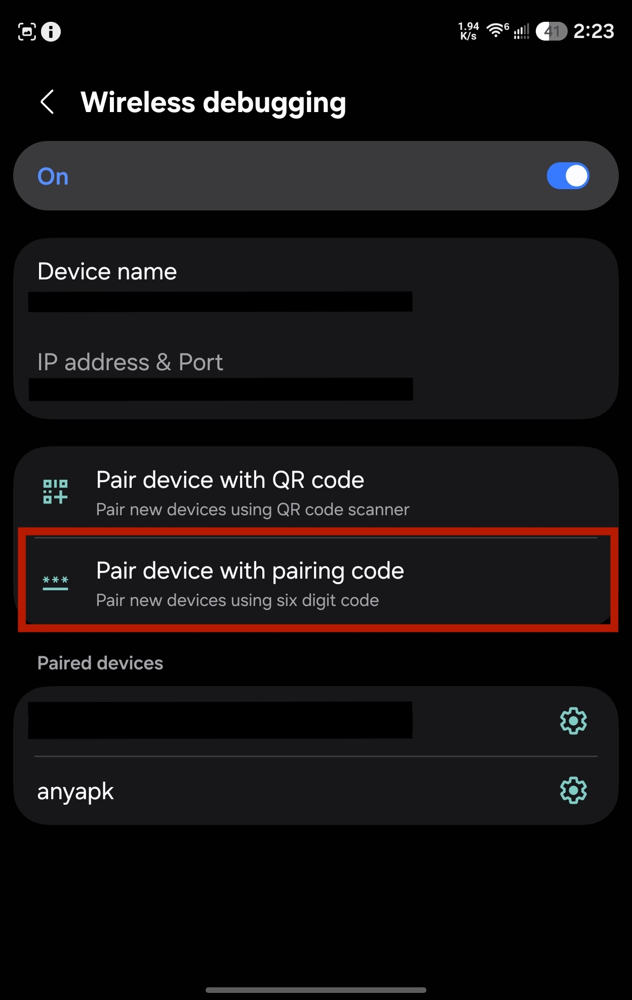
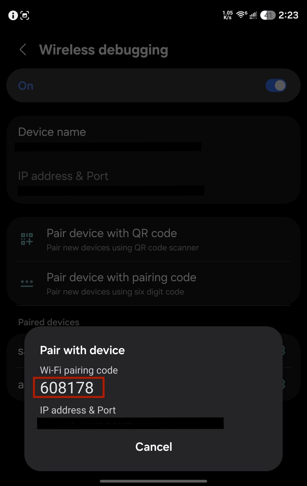
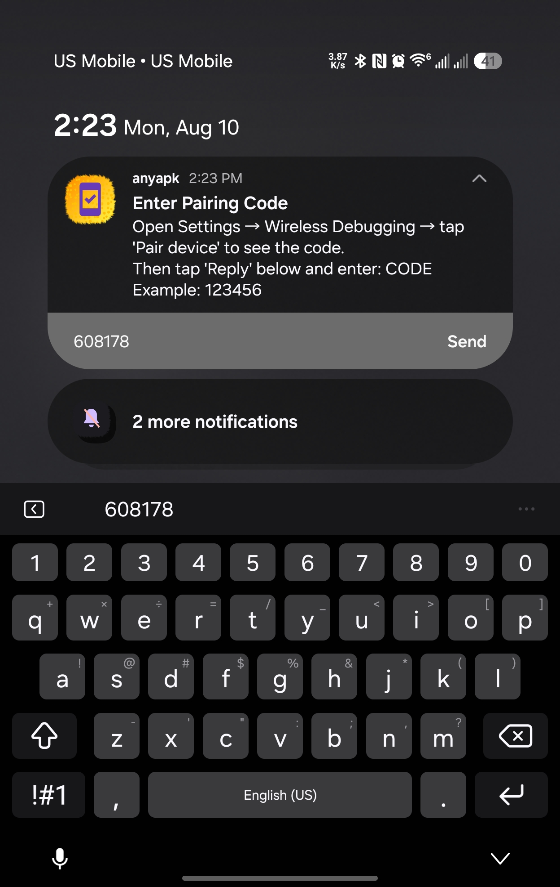

Application freedom is user freedom
Android devices belong to their users, not corporations or governments.
Yet with each passing year, installing software on your own device becomes more restricted, more cumbersome, and more dependent on the approval of gatekeepers who do not have your best interests in mind.
When a corporation becomes a gatekeeper, it does not stand at the gate alone. Its partners become gatekeepers. Government jurisdictions become gatekeepers. What begins as a "quality control measure" becomes a lever of control — one that has been used to deny people free communication tools, to block software that challenges power, and to enforce restrictions that serve business interests rather than users.
Every verification requirement is a chokepoint where control can be exercised. We built anyapk because:
- Your device belongs to you
- You have the right to run any software you choose
- No corporation or government should stand between you and that choice
- Technical barriers to freedom must be removed, not accepted
anyapk uses Android's own wireless debugging to install APKs locally — the same mechanism developers use, running entirely on your device. No root. No computer. No cloud. No approval.
Install anyapk
Grab the latest build from the
releases page, open it on your device,
and grant installation permission if prompted. There is one build per CPU architecture —
take the arm64-v8a one unless you know otherwise, since it covers virtually
every phone made in the last decade. The universal build works on anything
at roughly twice the size. After that, anyapk updates itself and picks the right build
for your device on its own.
If your device refuses to install it, use ADB from a computer once —
adb install anyapk-<version>-arm64-v8a.apk — and that's the last time
you'll need a computer for this.
Set up in three steps
One-time pairing with your device's wireless debugging. You never type a port and you never leave the Settings screen mid-pairing — the code goes into a notification.
-
Enable Developer Options
Open Settings → About Phone and tap Build Number seven times, until your device says you're a developer. Skip this if it's already on.
-
Grant notification permission
Open anyapk and tap Grant Notification Permission. The pairing code is entered by replying to a notification, so this one is required, not optional.

The setup checklist tracks your progress. -
Pair with wireless ADB
The only fiddly part, and it's over in a minute.
-
Tap Start Pairing. anyapk posts its pairing notification and opens Developer Options for you.

anyapk's notification rides along while you're in Settings. -
Scroll to the Debugging section, flip Wireless debugging on, then tap the row itself to open its screen.

Toggle it on, then tap the label to go in. -
Tap Pair device with pairing code — not the QR code option.

Choose the six-digit code method. -
A dialog shows your six-digit pairing code. Do not dismiss it and do not leave Settings.

Your code — good for this dialog only. This is the part people get wrong The pairing dialog has to stay open and visible behind the notification shade. Android only advertises the pairing service while that dialog is on screen, so if you close it or switch to anyapk to type the code, pairing will fail. -
Swipe the notification shade down over the dialog, find the anyapk notification, tap Reply, type the six digits and send. anyapk pairs and brings itself back to the foreground.

Reply to the notification without leaving Settings. -
Approve the "Allow USB debugging?" prompt with Always allow. If it never appears, tap Test Connection in anyapk to trigger it.
-
Installing APKs
Once paired, open any APK from a file manager, browser, or your downloads — and pick anyapk instead of the system Package installer. That chooser is where the gatekeeping ends.
Choose Just once to try it, or Always to hand every APK to anyapk from then on. You can also skip the chooser entirely: open anyapk and tap Select APK to Install.
Pairing is one-time and survives reboots, as long as wireless debugging stays enabled.
Privacy
anyapk collects nothing, tracks nothing, and transmits nothing about you or what you install. The only request that leaves your local network is the optional update check, which asks the GitHub releases API for the latest version number — and you can turn it off in Settings.